XRAI4AEC: Awesome-XRAI-for-AEC-Papers
A curated collection of papers focused on XR+AI for AEC (XRAI4AEC) and related technologies such as BIM, (2D/3D) computer vision, computer graphics, LLMs, VLMS, GenAI, deep/machine learning and data science.
Support This Project
If you find this resource helpful, consider supporting its development and maintenance.
Filter Options
Paper Card: Each paper belongs to only one primary category (green) as well as one or more sub-category (amber) tags and other additional theme tags
Search: Enter paper title or author names, then click to clear
Category: Filter by primary category (publication theme)
Year: Filter by publication year
Tags: Click once to include (blue), twice to exclude (red), third time to remove filter
Tags filter list is arranged to show each sub-category (amber) together with its associated tags, followed by additional sub-categories (amber) and their associated tags, all grouped under a primary category (green). The list then continues in the same way for the next primary category, and so on. You can also filter tags by selecting a specific primary category (green) from the dropdown list, which narrows the options to only that category, and shows only associated sub-category tags, additional tags, and years for further filtering.
Selection: Use selection mode to pick and share specific papers
Analytics: Use Analytics 📊 button to view statistics and insights about the papers in the collection.

Hey Building! Novel Interfaces for Parametric Design Manipulations in Virtual Reality (2025)
AI-Infused Design - Merging parametric models for architectural design (2025)
Digital twin based deep learning framework for personalized thermal comfort prediction and energy efficient operation in smart buildings (2025)
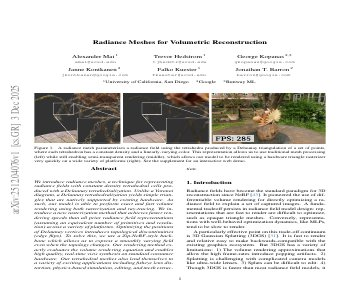
Radiance Meshes for Volumetric Reconstruction (2025)
Rethinking Architectural Design Process using Integrated Parametric Design and Machine Learning Principles (2025)
Advanced integration of BIM and VR in the built environment: Enhancing sustainability and resilience in urban development (2025)
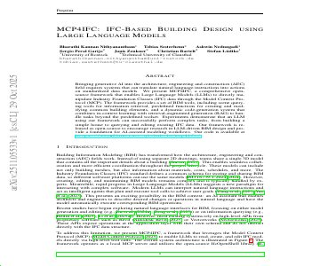
MCP4IFC: IFC-Based Building Design Using Large Language Models (2025)
Advances in artificial intelligence for structural health monitoring: A comprehensive review (2025)
A Comprehensive Overview of Heritage BIM Frameworks: Platforms and Technologies Integrating Multi-Scale Analyses, Data Repositories, and Sensor Systems (2025)
Human-Building Interaction (HBI): An Investigation of Immersive Virtual Environment (IVE) as Intelligent Observation Methods (2025)
Human–Building Interaction (HBI): An Investigation of Immersive Virtual Environment (IVE) as Intelligent Observation Methods (2025)
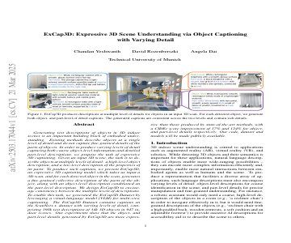
ExCap3D: Expressive 3D Scene Understanding via Object Captioning with Varying Detail (2025)
Space Use Efficiency through Occupancy Monitoring Technologies: A Case Study at KTH Royal Institute of Technology (2025)
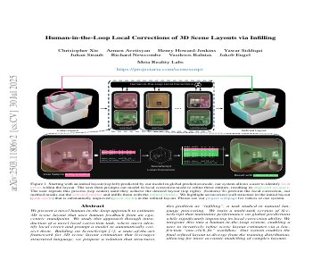
Human-in-the-Loop Local Corrections of 3D Scene Layouts via Infilling (2025)
Towards Tracking Circular Construction Supply Chains: Data Carrier Performance in Realistic Experiments (2025)
CyArk for digital documentation of cultural heritage sites and architecture (2025)
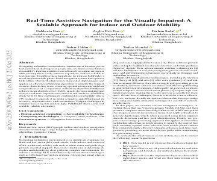
Real-Time Assistive Navigation for the Visually Impaired: A Scalable Approach for Indoor and Outdoor Mobility (2025)
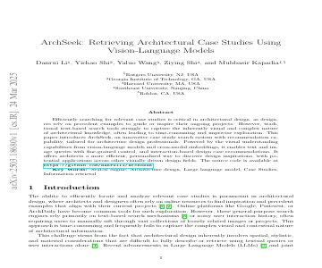
ArchSeek: Retrieving Architectural Case Studies Using Vision-Language Models (2025)
Streamlining LEED Submittals: How AI Agents Automate Documentation for Green Building Consultants (2025)
Automated BIM-to-scan point cloud semantic segmentation using a domain adaptation network with hybrid attention and whitening (DawNet) (2025)
Exploring AI-Integrated VR Systems: A Methodological Approach to Inclusive Digital Urban Design (2025)
Agile digitization for historic architecture using 360° capture, deep learning, and virtual reality (2025)
Google Arts and Culture (2025)
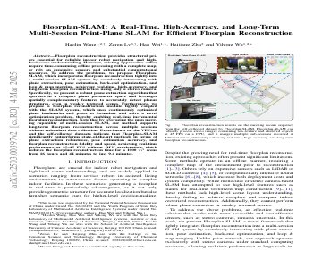
Floorplan-SLAM: A Real-Time, High-Accuracy, and Long-Term Multi-Session Point-Plane SLAM for Efficient Floorplan Reconstruction (2025)
A framework of BIM-IoT application in construction projects through multiple case study approach (2025)
Advancing circular economy transition in the Nigeria construction industry through digital twin technology adoption (2025)
Development and demonstration of a digital twin platform leveraging ontologies and data-driven simulation models (2025)
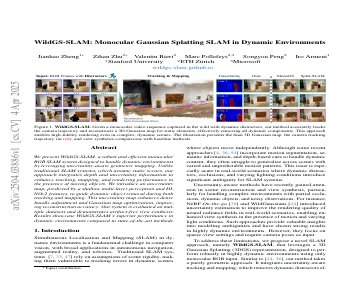
WildGS-SLAM: Monocular Gaussian Splatting SLAM in Dynamic Environments (2025)
Upcycling of regular wood trunks and logs using wave function collapse (WFC), augmented reality (AR), and mixed reality (MR) technologies for circular design (2025)
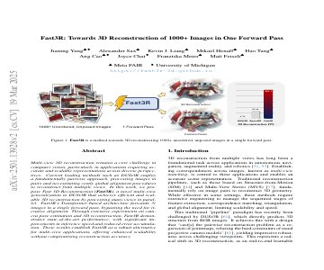
Fast3R: Towards 3D Reconstruction of 1000+ Images in One Forward Pass (2025)
Applications and Trends of Machine Learning in Building Energy Optimization: A Bibliometric Analysis (2025)
Applications and Trends of Machine Learning in Building Energy Optimization: A Bibliometric Analysis (2025)
From Mixed Reality to BIM: A Workflow for the Integration of Immersive Technologies at Architectural Design Process (2025)
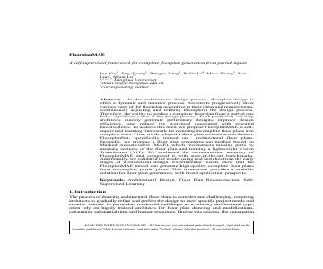
FloorplanMAE:A self-supervised framework for complete floorplan generation from partial inputs (2025)
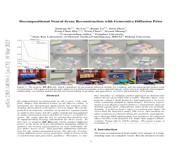
Decompositional Neural Scene Reconstruction with Generative Diffusion Prior (2025)
Formalizing Information for Disassembly Potenttial of Buildings Using BIM and Labeled Property Graphs (2025)
Demand response optimization for smart grid integrated buildings: Review of technology enablers landscape and innovation challenges (2025)
Real estate valuation with multi-source image fusion and enhanced machine learning pipeline (2025)
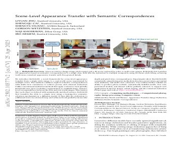
ReStyle3D: Scene-Level Appearance Transfer with Semantic Correspondences (2025)
Integrating ESG with Digital Twins and the Metaverse: A Data-Driven Framework for Smart Building Sustainability (2025)
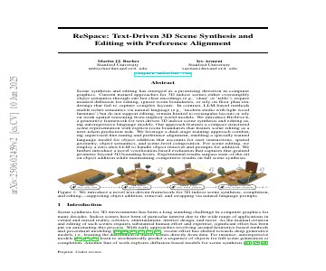
ReSpace: Text-Driven 3D Scene Synthesis and Editing with Preference Alignment (2025)
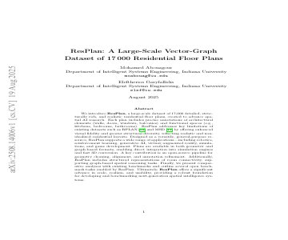
ResPlan: A Large-Scale Vector-Graph Dataset of 17,000 Residential Floor Plans (2025)
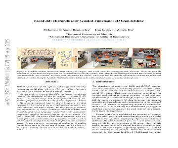
ScanEdit: Hierarchically-Guided Functional 3D Scan Editing (2025)
Regenarative Twin - Morgan Sindall Construction (2025)
Automated Scan-to-BIM: A Deep Learning-Based Framework for Indoor Environments with Complex Furniture Elements (2025)
A conceptual framework for designing human-centered building-occupant interactions to enhance user experience in specific-purpose buildings (2025)
Virtual Reality applications for visualization of 6000-year-old Neolithic graves from Lenzburg (Switzerland) (2025)
From point cloud to material passport: automated creation of material passports of existing steel structures based on point clouds (2025)
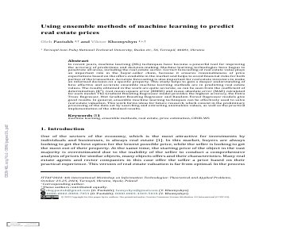
Using ensemble methods of machine learning to predict real estate prices (2025)
Structural Health Monitoring of Engineering Structures Using Digital Twins: A Digital Twin Platform Approach (2025)
Integrating IoT and BIM for Sustainable Construction Management: A Data-Driven Civil Engineering Model (2025)
PolyGraph: A Graph-Based Method for Floorplan Reconstruction From 3D Scans (2025)
Intuitive and Experiential Approaches to Enhance Conceptual Design in Architecture Using Building Information Modeling and Virtual Reality (2025)
Augmented Reality for Structural Inspection of Historic Monuments: The Case of Lausanne Cathedral (2025)
Temporal-online hybrid machine learning for occupancy forecasting: Enhancing energy efficiency in smart building management systems (2025)
BIM-driven digital twin for demolition waste management of existing residential buildings (2025)
Construction Progress Monitoring with Drone + BIM Integration (2025)
Leveraging AI to Enhance XR in the AEC Industry (2025)
What Do We Design for When We Design "Smart Buildings"? - A Scoping Review of Human Experience Design Research in Buildings (2025)
Development of an occupancy measurement system for micro-zones within open office spaces based on multi-view multi-person 3D pose estimation (2025)
The Role of Digital Twins in Predictive Building Maintenance → Scenario (2025)
Towards the Use of AI for Assessing Construction Sustainability: A State-of-the-Art Review on BREEAM Assessment (2025)
HouseLayout3D: A Benchmark and Training-free Baseline for 3D Layout Estimation in the Wild (2025)
HeXA: Haptic-enhanced eXtended reality framework for material-informed Architectural design (2025)
Integrating digital twin technologies for maintenance 4.0 in the building industry: A review and conceptual framework (2025)
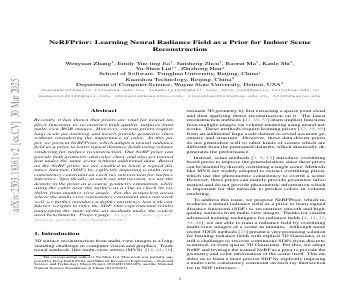
NeRFPrior: Learning Neural Radiance Field as a Prior for Indoor Scene Reconstruction (2025)
Developing campus digital twin using interactive visual analytics approach (2025)
MCP-Driven Parametric Modeling: Integrating LLM Agents into Architectural and Landscape Design Workflows (2025)
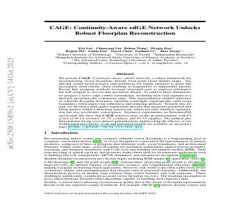
CAGE: Continuity-Aware edGE Network Unlocks Robust Floorplan Reconstruction (2025)
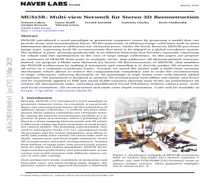
MUSt3R: Multi-view Network for Stereo 3D Reconstruction (2025)
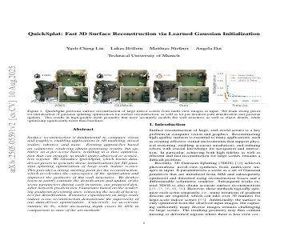
QuickSplat: Fast 3D Surface Reconstruction via Learned Gaussian Initialization (2025)
A long-term evidence-based study of circadian rhythm-oriented control strategies for office luminous environments (2025)
Scan-to-BIM-to-Sim: Automated reconstruction of digital and simulation models from point clouds with applications on bridges (2025)
Virtual Reality, Real Profits: How VR Reshapes Price, Bidding Competition, and Strategic Reactions in Online House Auctions (2025)
Approach Towards the Development of Digital Twin for Structural Health Monitoring of Civil Infrastructure: A Comprehensive Review (2025)
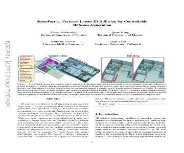
SceneFactor: Factored Latent 3D Diffusion for Controllable 3D Scene Generation (2024)
Enhanced clash detection in building information modeling: Leveraging modified extreme gradient boosting for predictive analytics (2024)
Impact of space utilization and work time flexibility on energy performance of office buildings (2024)
Digital Twin Enabled Construction Progress Monitoring (2024)
A review of building digital twins to improve energy efficiency in the building operational stage (2024)
Combining Building Information Model and Life Cycle Assessment for Defining Circular Economy Strategies (2024)
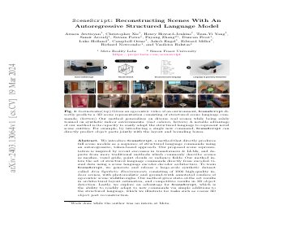
SceneScript: Reconstructing Scenes With An Autoregressive Structured Language Model (2024)
AI-Assisted Design: Utilising artificial intelligence as a generative form-finding tool in architectural design studio teaching (2024)
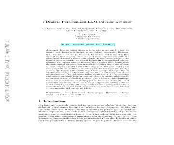
I-Design: Personalized LLM Interior Designer (2024)
In Jingdezhen, China, historic preservation shapes a modern architectural marvel (2024)
Digital twin-driven prognostics and health management for industrial assets (2024)
From research to practice: A review on technologies for addressing the information gap for building material reuse in circular construction (2024)
A Systematic Review of the Applications of AI in a Sustainable Building’s Lifecycle (2024)
Can Digital Matchmaking Boost Circular Construction? Lessons from Reusing the Glass of Centre Pompidou (2024)
D5 digital circular workflow: five digital steps towards matchmaking for material reuse in construction (2024)
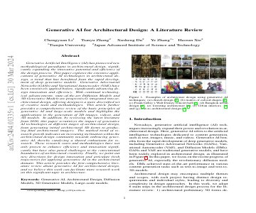
Generative AI for Architectural Design: A Literature Review (2024)
The review of AI and cultural heritage protection - Taking the whole process of cultural heritage protection as an example (2024)
AI-Enhanced Performative Building Design Optimization and Exploration: A Design Framework Combining Computational Design Optimization and Generative AI (2024)
Leveraging Digital Twin Technology to Optimize Operations and Sustainability: Insights from an Office Building Case Study (2024)
Using augmented reality models to engage stakeholders on retrofitting buildings (2024)
Virtual reality-based site layout planning for building design (2024)
An Analysis of Research Trends for Using Artificial Intelligence in Cultural Heritage (2024)
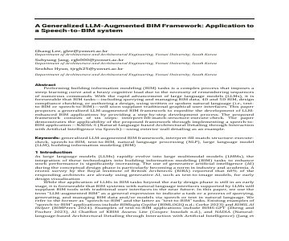
A Generalized LLM-Augmented BIM Framework: Application to a Speech-to-BIM system (2024)
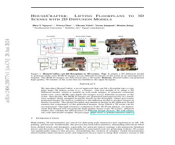
HouseCrafter: Lifting Floorplans to 3D Scenes with 2D Diffusion Model (2024)
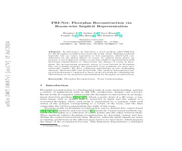
FRI-Net: Floorplan Reconstruction via Room-wise Implicit Representation (2024)
Web-Based Material Database for Circular Design (2024)
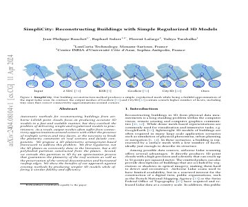
SimpliCity: Reconstructing Buildings with Simple Regularized 3D Models (2024)
Sustainability scoring tool for real estate according to German and European valuation principles in the purchasing process (2024)
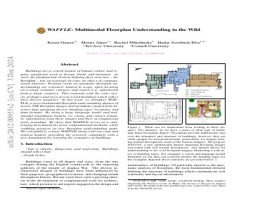
WAFFLE: Multimodal Floorplan Understanding in the Wild (2024)
Level-adaptive sound masking in the open-plan office: How does it influence noise distraction, coping, and mental health? (2024)
Living Building Challenge (2024)
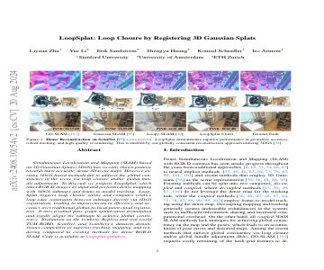
LoopSplat: Loop Closure by Registering 3D Gaussian Splats (2024)
3D documentation of cultural heritage using terrestrial laser scanning (2024)
A Comprehensive Review of Digital Twin Technology in Building Energy Consumption Forecasting (2024)
Extended reality (XR) impacts on real estate market and economic-financial project management of residential built environments: systematic review and analysis (2024)
Building a sustainable campus for the world’s first climate-positive university (2024)
Artificial intelligence-assisted visual inspection for cultural heritage: State-of-the-art review (2024)
Viewpoints on AR and VR in heritage tourism (2024)
Viewpoints on AR and VR in heritage tourism (2024)
Designing affective workplace environments: The impact of typology, contour, ceiling and partition height on cognitive and aesthetic appraisal (2024)
Semantic Enrichment of Architectural Heritage Point Clouds Using Artificial Intelligence: The Palacio de Sástago in Zaragoza, Spain (2024)
From Novelty to Norm: Uncovering the Drivers of Virtual Tour Effectiveness in Real Estate Sales (2024)
Automated BIM generation for large-scale indoor complex environments based on deep learning (2024)
Development of a 3D Digital Model of End-of-Service-Life Buildings for Improved Demolition Waste Management through Automated Demolition Waste Audit (2024)
Smarter Buildings, Cleaner Grid: The Case for Automated Demand Management (2024)
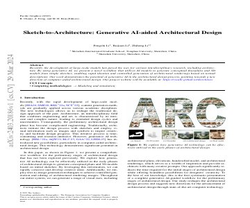
Sketch-to-Architecture: Generative AI-aided Architectural Design (2024)
Novel View Synthesis of Structural Color Objects Created by Laser Markings (2024)
Artificial Intelligence, Virtual Reality, and Augmented Reality to Enhance Visual Quality and Accessibility in Sustainable Built Environments (2024)
Towards a holistic assessment of circular economy strategies: The 9R circularity index (2024)
Cultural preservation and digital heritage: challenges and opportunities (2024)
Integrating Emerging Technologies with Digital Twins for Heritage Building Conservation: An Interdisciplinary Approach with Expert Insights and Bibliometric Analysis (2024)
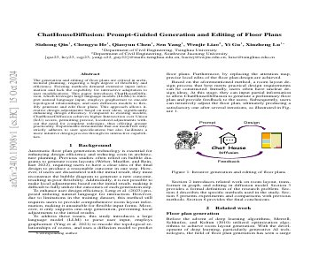
ChatHouseDiffusion: Prompt-Guided Generation and Editing of Floor Plans (2024)
Infrastructure digital twin technology: A new paradigm for future construction industry (2024)
Integrating Data from Terrestrial Laser Scanning and Unmanned Aerial Vehicle with LiDAR for BIM Developing (2024)
Tracking Indoor Location, Movement and Desk Occupancy in the Workplace (2024)
Developing campus digital twin using interactive visual analytics approach (2024)
Heritage ++, a Spatial Computing approach to Heritage Conservation (2024)
Digital Twins in Construction: Architecture, Applications, Trends and Challenges (2024)
Integrating Extended Reality (XR) in Architectural Design Education: A Systematic Review and Case Study at Southeast University (China) (2024)
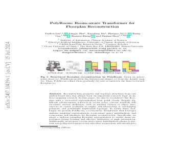
PolyRoom: Room-aware Transformer for Floorplan Reconstruction (2024)
Does Virtual Reality Help Property Sales? Empirical Evidence from a Real Estate Platform (2024)
Augmented reality applications in construction productivity: A systematic literature review (2024)
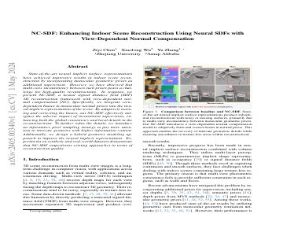
NC-SDF: Enhancing Indoor Scene Reconstruction Using Neural SDFs with View-Dependent Normal Compensation (2024)
Conversational artificial intelligence in the AEC industry: A review of present status, challenges and opportunities (2023)
BIM and Machine Learning (ML) Integration in Design Coordination: Using ML to automate object classification for clash detection (2023)
Exploring Creative AI Thinking in the Design Process: The Design Intelligence Strategy (2023)
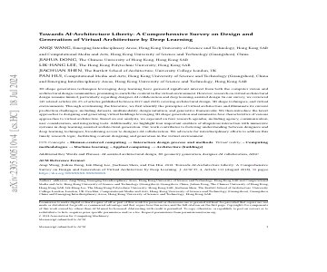
Towards AI-Architecture Liberty: A Comprehensive Survey on Design and Generation of Virtual Architecture by Deep Learning (2023)
Virtual Reality as a Catalyst in Advancing Inclusive Design for Social and Cultural Sustainability in Architecture (2023)
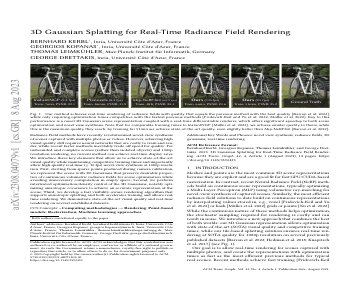
3D Gaussian Splatting for Real-Time Radiance Field Rendering (2023)
Occupant behavior impact in buildings and the artificial intelligence-based techniques and data-driven approach solutions (2023)
Automatic generation of synthetic heritage point clouds: Analysis and segmentation based on shape grammar for historical vaults (2023)
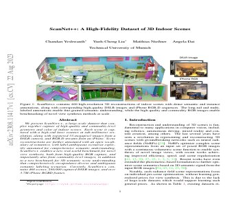
ScanNet++: A High-Fidelity Dataset of 3D Indoor Scenes (2023)
City Loops (2023)
Data Reliability in BIM and Performance Analytics: A Survey of Contemporary AECO Practice (2023)
Human-building interaction for indoor environmental control: Evolution of technology and future prospects (2023)
Towards human-centered artificial intelligence (AI) in architecture, engineering, and construction (AEC) industry (2023)
Metadata for 3D Digital Heritage Models. In the Search of a Common Ground (2023)
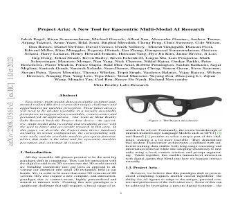
Project Aria: A New Tool for Egocentric Multi-Modal AI Research (2023)
Developing a digital twin model for monitoring building structural health by combining a building information model and a real-scene 3D model (2023)
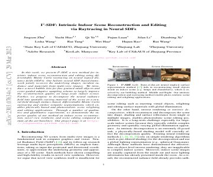
I2-SDF: Intrinsic Indoor Scene Reconstruction and Editing via Raytracing in Neural SDFs (2023)
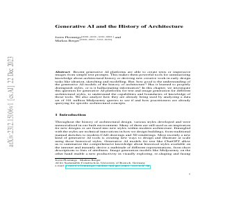
Generative AI and the History of Architecture (2023)
A Digital Twin Platform for Energy Efficient and Smart Buildings Applications (2023)
Integrating Parametric Modeling, BIM, and Building Performance Analysis into Augmented Reality for Architectural Design and Education (2023)
Modeling of 3D geometry uncertainty in Scan-to-BIM automatic indoor reconstruction (2023)
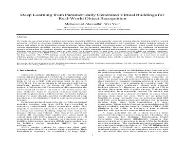
Deep Learning from Parametrically Generated Virtual Buildings for Real-World Object Recognition (2023)
Digital real estate: a review of the technologies and tools transforming the industry and society (2023)
Automating the retrospective generation of As-is BIM models using machine learning (2023)
Applicability of deep learning algorithms for predicting indoor temperatures: Towards the development of digital twin HVAC systems (2023)
Circular economy adoption barriers in built environment- a case of emerging economy (2023)
Surface Damage Identification for Heritage Site Protection: A Mobile Crowd-sensing Solution Based on Deep Learning (2023)
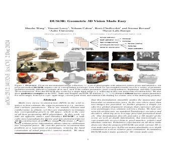
DUSt3R: Geometric 3D Vision Made Easy (2023)
The Net Zero journey: Why digital twins are a powerful ally (2023)
A Review of Machine Learning Approaches for Real Estate Valuation (2023)
Future Cities Advisory Outlook 2023: Digital Innovations Empower Urban Net-Zero Carbon Transition (2023)
Building Materials and the Climate: Constructing a New Future (2023)
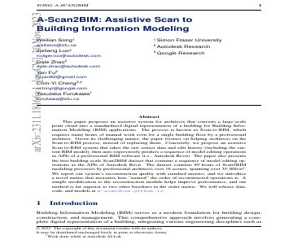
A-Scan2BIM: Assistive Scan to Building Information Modeling (2023)
Exploring Building Information Modeling (BIM) and Internet of Things (IoT) Integration for Sustainable Building (2023)
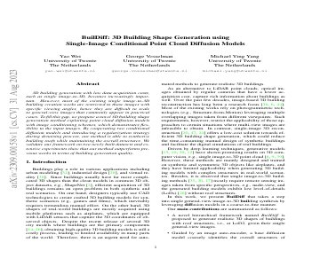
BuilDiff: 3D Building Shape Generation using Single-Image Conditional Point Cloud Diffusion Models (2023)
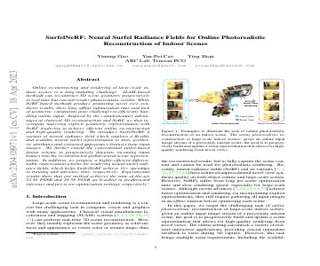
SurfelNeRF: Neural Surfel Radiance Fields for Online Photorealistic Reconstruction of Indoor Scenes (2023)
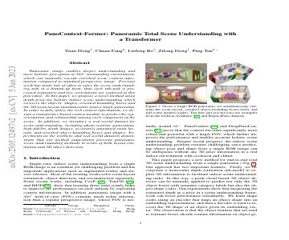
PanoContext-Former: Panoramic Total Scene Understanding with a Transformer (2023)
Toward 3D Property Valuation—A Review of Urban 3D Modelling Methods for Digital Twin Creation (2023)
Digital twin-based resilience evaluation of district-scale archetypes: A COVID-19 scenario case study using a university campus pilot (2022)
Object verification based on deep learning point feature comparison for scan-to-BIM (2022)
The field of human building interaction for convergent research and innovation for intelligent built environments (2022)
Human-building interaction towards a sustainable built environment: A review (2022)
More than just a big idea – how extended reality tech can enable a circular economy (2022)
Circular TwAIn --- circular-twain-project.eu (2022)
Proposal for a Regulation of the European Parliament and the Council establishing a framework for setting ecodesign requirements for sustainable products and repealing Directive 2009/125/EC (2022)
Beyond Location: Value drivers of office space (2022)
Geometric features interpretation of photogrammetric point cloud from Unmanned Aerial Vehicle (2022)
A Digital Twin predictive maintenance framework of air handling units based on automatic fault detection and diagnostics (2022)
Controlling Commercial Cooling Systems Using Reinforcement Learning (2022)
Energy-efficient personalized thermal comfort control in office buildings based on multi-agent deep reinforcement learning (2022)
Virtual reality for the enhancement of cultural tangible and intangible heritage: The case study of the Castle of Corsano (2022)
Artificial Intelligence for Heritage Conservation: A Case Study of Automatic Visual Inspection System (2022)
Understanding occupants’ behaviour, engagement, emotion, and comfort indoors with heterogeneous sensors and wearables (2022)
Impact of WELL certification on occupant satisfaction and perceived health, well-being, and productivity: A multi-office pre- versus post-occupancy evaluation (2022)
ASHRAE global database of thermal comfort field measurements (2022)
BUILDING DAMAGE ASSESSMENT WITH DEEP LEARNING (2022)
Presenting Architectural Research in VR (2022)
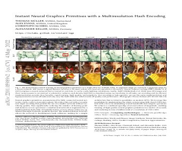
Instant Neural Graphics Primitives with a Multiresolution Hash Encoding (2022)
Visual comfort generative design framework based on parametric network in underground space (2022)
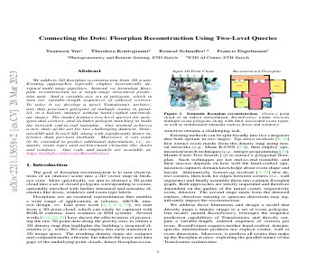
Connecting the Dots: Floorplan Reconstruction Using Two-Level Queries (2022)
A review on occupancy prediction through machine learning for enhancing energy efficiency, air quality and thermal comfort in the built environment (2022)
Smart City Construction and Management by Digital Twins and BIM Big Data in COVID-19 Scenario (2022)
Smart City Construction and Management by Digital Twins and BIM Big Data in COVID-19 Scenario (2022)
Enabling Preventive Conservation of Historic Buildings Through Cloud-Based Digital Twins: A Case Study in the City Theatre, Norrköping (2022)
Building Information Modeling and Internet of Things integration for smart and sustainable environments: A review (2021)
Cyber-Physical Systems Improving Building Energy Management: Digital Twin and Artificial Intelligence (2021)
Blockchain-driven integration technology for the AEC industry (2021)
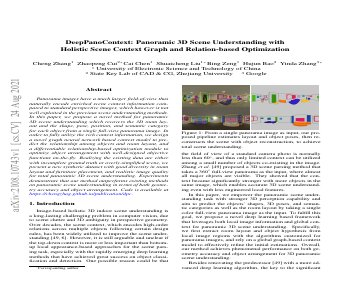
DeepPanoContext: Panoramic 3D Scene Understanding with Holistic Scene Context Graph and Relation-based Optimization (2021)
Development of a personalized thermal comfort driven controller for HVAC systems (2021)
A digital twin framework for improving energy efficiency and occupant comfort in public and commercial buildings (2021)
BIM and IoT Sensors Integration: A Framework for Consumption and Indoor Conditions Data Monitoring of Existing Buildings (2021)
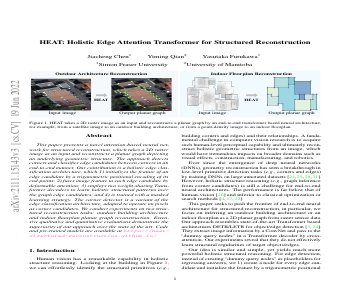
HEAT: Holistic Edge Attention Transformer for Structured Reconstruction (2021)
BIM, machine learning and computer vision techniques in underground construction: Current status and future perspectives (2021)
MonteFloor: Extending MCTS for Reconstructing Accurate Large-Scale Floor Plans (2021)
Early-Phase Performance-Driven Design using Generative Models (2021)
Metadata schema and ontology for capturing and processing of 3D cultural heritage objects (2021)
Residential floor plan recognition and reconstruction (2021)
Hybrid Approach for Digital Twins in the Built Environment (2021)
Improving energy efficiency while preserving historic buildings with digital twins and artificial intelligence (2021)
The Effect of Virtual Tours on House Price and Time on Market (2020)
NeRF: Representing Scenes as Neural Radiance Fields for View Synthesis (2020)
A selective disassembly multi-objective optimization approach for adaptive reuse of building components (2020)
Circular Twin --- cundall.com (2020)
From Principles to Practices: Realising the value of circular economy in real estate - a report by Arup (2020)
Mobile Assistive Application for Blind People in Indoor Navigation (2020)
Formal analysis and validation of Levels of Geometry (LOG) in building information models (2020)
3D DOCUMENTATION OF CULTURAL HERITAGE SITES USING DRONE AND PHOTOGRAMMETRY: A CASE STUDY OF PHILIPPINE UNESCO-RECOGNIZED BAROQUE CHURCHES (2020)
On How Technology-Powered Storytelling Can Contribute to Cultural Heritage Sustainability across Multiple Venues - Evidence from the CrossCult H2020 Project (2020)
SketchOpt: Sketch-based Parametric Model Retrieval for Generative Design (2020)
Digital twin-enabled anomaly detection for built asset monitoring in operation and maintenance (2020)
Building Information Modelling, Artificial Intelligence and Construction Tech (2020)
Energy saving potentials of integrating personal thermal comfort models for control of building systems: Comprehensive quantification through combinatorial consideration of influential parameters (2020)
Vision-Based Mobile Indoor Assistive Navigation Aid for Blind People (2019)
Introduction to Human-Building Interaction (HBI): Interfacing HCI with Architecture and Urban Design (2019)
3D Scene Graph: A Structure for Unified Semantics, 3D Space, and Camera (2019)
DeepSDF: Learning Continuous Signed Distance Functions for Shape Representation (2019)
Structured3D: A Large Photo-realistic Dataset for Structured 3D Modeling (2019)
Filtering of Irrelevant Clashes Detected by BIM Software Using a Hybrid Method of Rule-Based Reasoning and Supervised Machine Learning (2019)
FloorNet: A Unified Framework for Floorplan Reconstruction from 3D Scans (2018)
Generative Urban Design: Integrating Financial and Energy Goals for Automated Neighborhood Layout (2018)
Reflecting Sustainability in Property Valuation - Defining the Problem (2018)
Inclusive design in architectural practice: Experiential learning of disability in architectural education (2018)
Project Discover: An application of generative design for architectural space planning (2017)
Joint 2D-3D-Semantic Data for Indoor Scene Understanding (2017)
Virtual and Augmented Reality in Architectural Design and Education An Immersive Multimodal Platform to Support Architectural Pedagogy (2017)
Human-Building Interaction: When the Machine Becomes a Building (2017)
The application of web of data technologies in building materials information modelling for construction waste analytics (2017)
A Survey of Structure from Motion (2017)
A Haptic-Audio Simulator Indoor Navigation: To Assist Visually Impaired Environment Exploration (2016)
Past, Present, and Future of Simultaneous Localization And Mapping: Towards the Robust-Perception Age (2016)
An assistive haptic interface for appearance-based indoor navigation (2016)
Structure-from-Motion Revisited (2016)
Space–use analysis through computer vision (2015)
Parametric design strategies for the generation of creative designs (2014)
State of the art in building modelling and energy performances prediction: A review (2013)
Photogrammetry and laser scanning for archaeological site 3D modeling - Some critical issues (2012)
BIM Handbook: A Guide to Building Information Modeling for Owners, Managers, Designers, Engineers and Contractors (2011)
Research challenges for digital archives of 3D cultural heritage models (2010)
Documentation of cultural heritage using digital photogrammetry and laser scanning (2007)